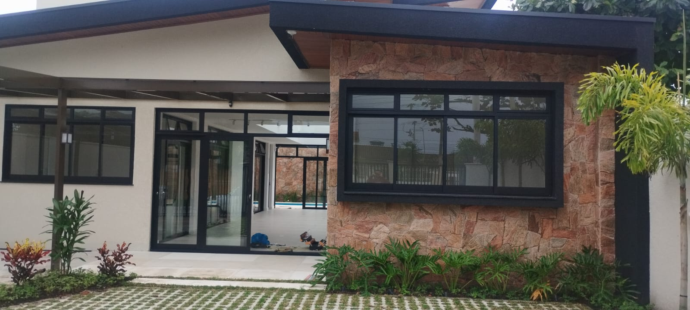

Esquadrias de alumínio
Precisão, leveza e integração com o projeto.
- Portas
- Janelas
- Portões
- Basculantes
- Fechamentos
- Estruturas personalizadas
JB Esquadrias · Matinhos, Paraná
Soluções sob medida em esquadrias de alumínio e vidro temperado, pensadas para unir funcionalidade, acabamento e presença visual.
O projeto começa antes da instalação
Medidas, uso do espaço, segurança, estética e durabilidade fazem parte da decisão. Por isso, a JB trabalha com soluções pensadas para o ambiente real — não apenas com peças isoladas.
O objetivo é que portas, janelas, fechamentos e elementos em vidro se integrem à arquitetura e funcionem bem no dia a dia.
Soluções
Esquadrias de alumínio
Vidros temperados
Portfólio real
Explore os detalhes

Selecione um ponto sobre a imagem para entender o papel de cada detalhe.
Sobre a JB
Desde 2022
A JB Esquadrias atua em Matinhos com foco em soluções personalizadas em alumínio e vidro. Esta versão mantém a apresentação institucional neutra até que a trajetória completa da empresa seja validada diretamente com Bruno.
Falar sobre meu projeto ↗
Princípios
Cada espaço possui medidas, usos e necessidades diferentes.
Encontros, alinhamentos e detalhes visuais influenciam o resultado final.
A solução precisa considerar funcionalidade, aplicação e durabilidade esperada.
O projeto começa com entendimento claro do que o cliente precisa.
A execução precisa respeitar medidas, alinhamento e características do ambiente.
Como trabalhamos
Você chama pelo WhatsApp e apresenta a necessidade.
A empresa entende o ambiente, aplicação e resultado esperado.
As medidas necessárias são avaliadas ou solicitadas.
A solução e o orçamento são preparados com base no projeto.
Após aprovação, a solução segue para produção conforme processo real da empresa.
A instalação é realizada no ambiente combinado.
Orçamento inteligente
Preencha o que souber. Medidas e prazo são opcionais e podem ser definidos depois.
FAQ
Trabalhamos com projetos sob medidas, válido confirmação pelo nosso WhatsApp
Sim, o material fornecido apresenta vidro temperado como uma das principais áreas de atuação.
Você pode preencher o configurador do site ou usar qualquer botão de WhatsApp. A mensagem será aberta com os dados do seu projeto.
Não necessariamente. Você pode enviar medidas aproximadas se já tiver; a necessidade de medição deve ser alinhada diretamente com a empresa.
Realizamos instalação mediante orçamento e planejamento do projeto.
Matinhos e região são o escopo inicial informado. Outras cidades devem ser incluídas apenas após confirmação.
O prazo depende do projeto e não foi confirmado. A JB deve informar a estimativa após entender o serviço.
Localização
Matinhos · Paraná
Para quem procura esquadrias de alumínio em Matinhos, vidros temperados em Matinhos, portas, janelas e soluções em esquadrias em Caiobá, a JB concentra o atendimento em projetos personalizados. Outras cidades do litoral devem ser citadas somente após confirmação da área real de atendimento.
Seu projeto começa por uma conversa
Envie sua ideia, foto ou medidas. A equipe pode analisar o projeto e orientar sobre a solução adequada.
Solicitar orçamento pelo WhatsApp